The four setups
| Setup | Build | Time / image | VRAM peak | My rating (avg of 16) |
|---|---|---|---|---|
| Qwen-Image 2.1 RTX 5090 · 32 GB | bf16 DiT + bf16 encoder + bf16 VAE (full precision, no quantization) | 86 s (1.4 min) | 31.9 GB | 7.13 / 10 |
| FLUX.2 [dev] RTX 5090 · 32 GB | GGUF Q6_K + fp8 encoder (largest quant that fits 32 GB) | 172 s (2.9 min) | 29.8 GB | 4.50 / 10 |
| Qwen-Image 2.1 RTX 5060 Ti · 16 GB | int8_convrot DiT + w4a8 encoder + bf16 VAE (fits fully in VRAM) | 490 s (8.2 min) | 15.7 GB | 7.06 / 10 |
| FLUX.2 [dev] RTX 5060 Ti · 16 GB | GGUF Q3_K_S + fp4_mixed encoder, weights streamed from NVMe (--novram) | 722 s (12.0 min) | 11.8 GB | 4.38 / 10 |
Where every number on this page comes from
- Time per image (4 setups) —
ERGEBNIS-imgbench-2026-09-21.md, core table, rows "Qwen/FLUX 16 GB / 32 GB" - VRAM peak (4 setups) —
ERGEBNIS-imgbench-2026-09-21.md, same table, column "VRAM-Peak" - Build / quantization —
ERGEBNIS-imgbench-2026-09-21.md, same table, column "Artefakte" - Cell average rating —
imgbench-bewertung-2026-09-21.json, block "averages" - Per-image rating (every thumbnail) —
imgbench-bewertung-2026-09-21.json, array "ratings" (cell, prompt id, seed) - Full prompt text, seeds, steps, resolutions —
spec-imgbench-v3.txt, frozen spec, sections PROMPTS / SEEDS / SAMPLING - Total runs 64, all finished —
ERGEBNIS-imgbench-2026-09-21.md, header line "64 gesamt. Alle 64/64 GRUEN"
The per-image timing metadata (wall seconds, VRAM peak per generation) sits next to the original PNGs in the run folders of the benchmark night.
A1 · sakura-911-neon
1:1 -> 2048x2048seeds 4210 / 4211A rain-slicked neon-lit street at night: under a glowing red neon sign that reads exactly "REDLINE GARAGE" with a smaller white neon line "TUNING · SERVICE · 24/7" beneath it, a white Porsche 911 Turbo with an itasha sakura livery of lilac cherry blossoms and dark brown branches is parked on wet asphalt, petals floating in the air, neon reflections everywhere, ultra-detailed cinematic wallpaper.
Qwen renders both neon lines letter-perfect on both cards. This prompt produced the best image of the run (9/10 on both cards).
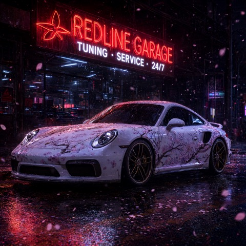
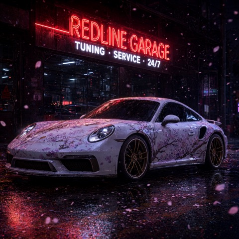
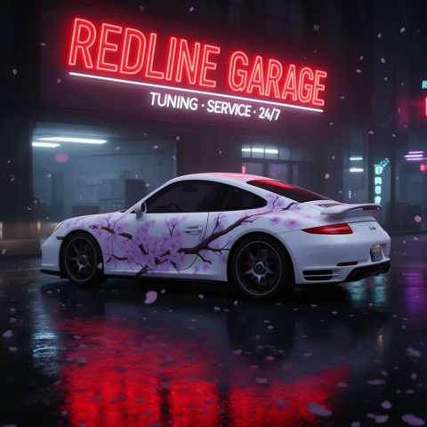
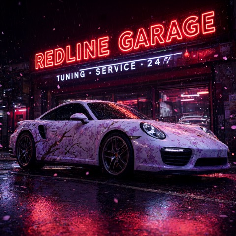
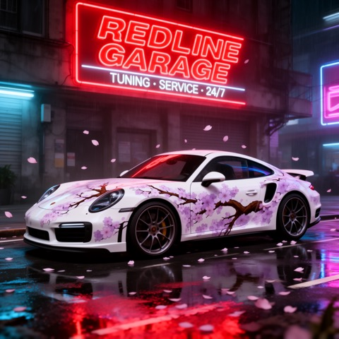
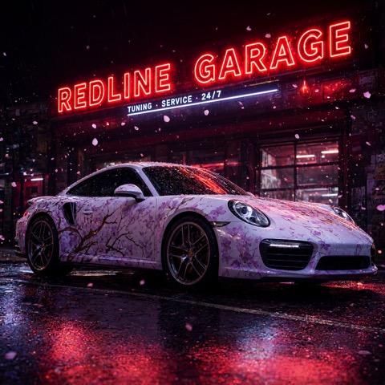
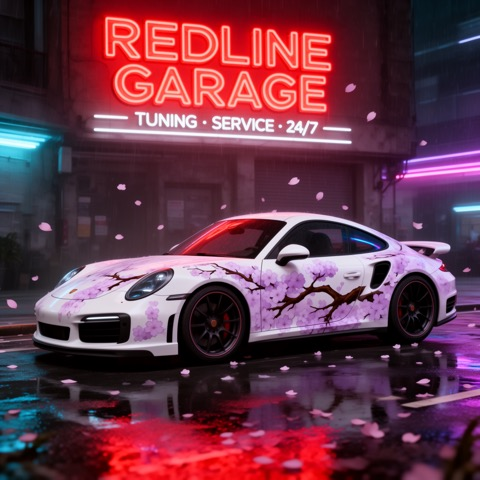
A2 · dark-fantasy-poster
2:3 -> 1696x2528seeds 4210 / 4211Dark fantasy movie poster: the title "BLADE OF RUIN" in cracked molten-metal letters at the top and the tagline "ONE SWORD. NO MERCY." beneath it, a colossal greatsword driven into shattered ground, a bloodied warrior kneeling beside it, burning sky and drifting embers, ultra-detailed wallpaper-grade print design.
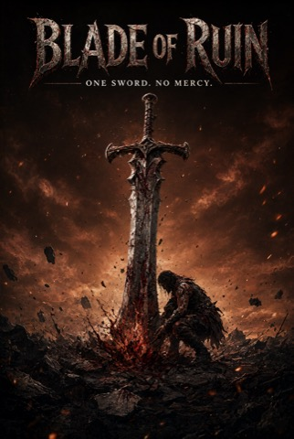
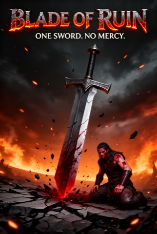
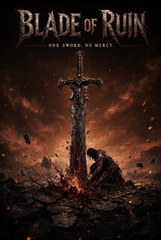
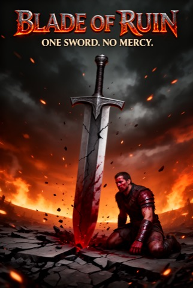
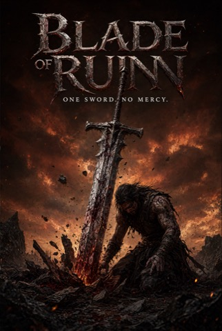
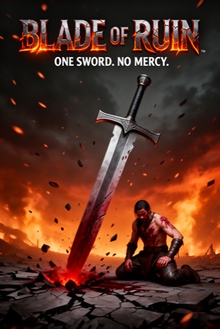
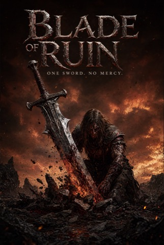
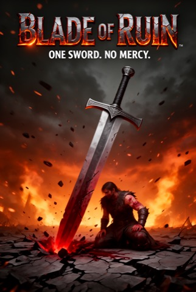
A3 · cnc-forged-blade
1:1 -> 2048x2048seeds 4210 / 4211Extreme close-up of a giant sword blade clamped in a CNC milling machine, the brushed steel engraved with the text "FORGED NOT PRINTED" and a smaller serial "UNIT 0421", sharp metal burrs around the letter grooves, coolant mist and sparks, workshop lighting, shallow depth of field, wallpaper-grade macro detail.
Letter-perfect engraving on both Qwen cards. Single documented slip: on the 16 GB Qwen build, seed 4210, "NOT" drifts into a symbol plus a T.
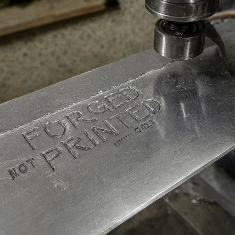
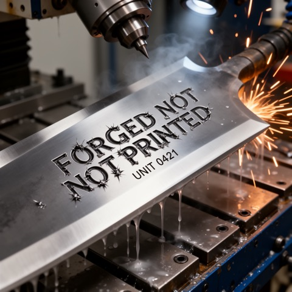
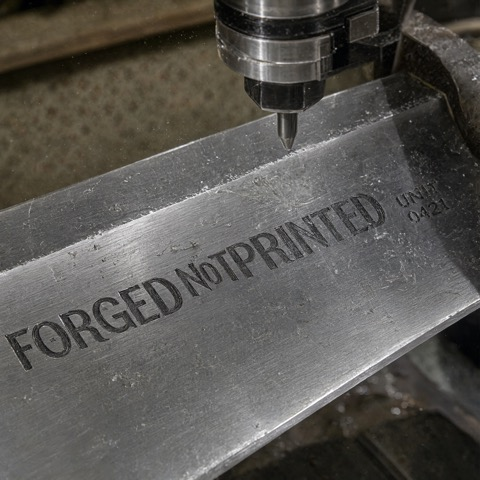
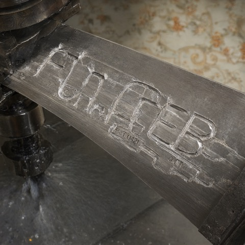
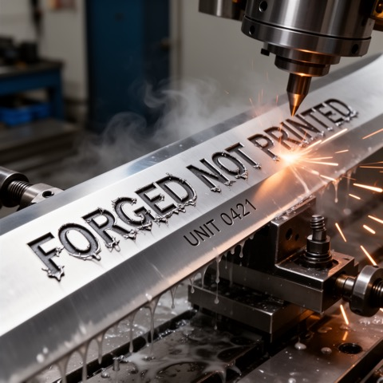
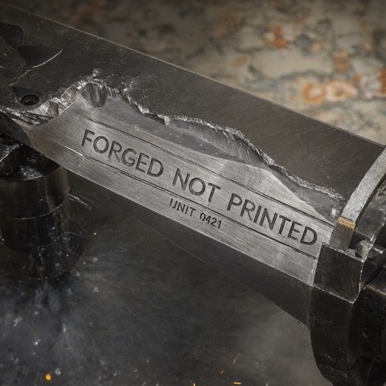
B1 · three-sword-warrior
1:1 -> 2048x2048seeds 4210 / 4211A battle-scarred warrior in torn dark clothing wields three katanas in three-sword style — one in each hand and the third clamped between his teeth — blood splatter across his face, moonlit temple rooftop, torn banners whipping in the wind, dynamic action pose, hyper-detailed dark anime illustration, wallpaper-grade detail.
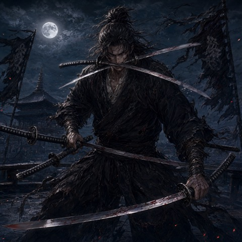
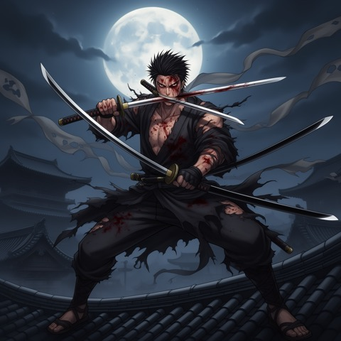
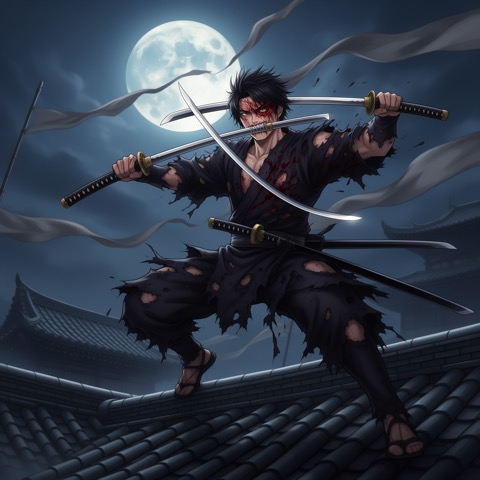
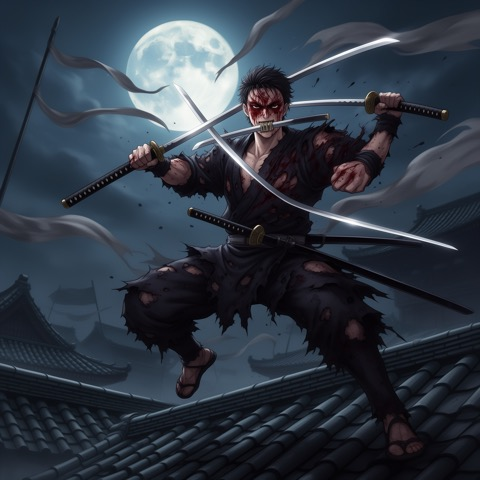
B2 · four-legend-cars
3:2 -> 2528x1696seeds 4210 / 4211Four legendary tuner cars parked side by side in a rain-soaked neon underground car park, from left to right: a bayside blue Nissan Skyline GT-R R34, a black BMW M3 E46 with wide arches, a pearl white Ferrari 458 with a Liberty Walk widebody kit and giant rear wing, and a red Mazda RX-7 FD, reflections shimmering on wet concrete, cinematic night photography, wallpaper-grade detail.
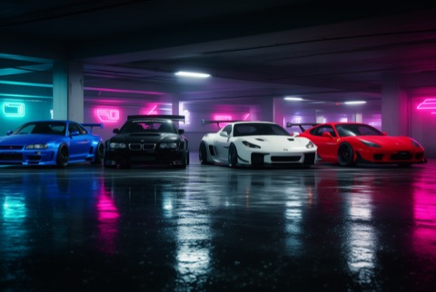
B3 · six-car-drift
1:1 -> 2048x2048seeds 4210 / 4211Top-down aerial view of a midnight city tunnel during a drift run, exactly six tuner cars sliding in formation through tire smoke, all white liveries except the third car from the left which is bayside blue, headlight beams cutting through the smoke, long light trails on wet asphalt, cinematic, wallpaper-grade detail.
Hardest prompt for both models: six moving cars plus a color order to count. Counting fails on both (Qwen 5-6, FLUX 2-4).
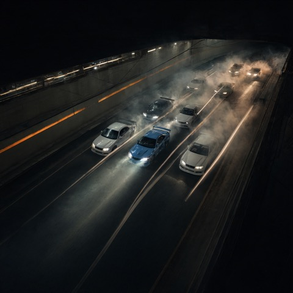
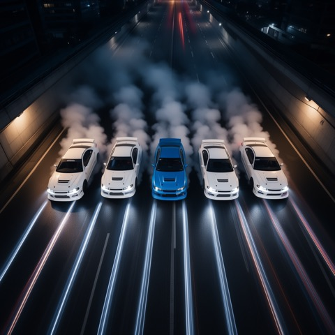
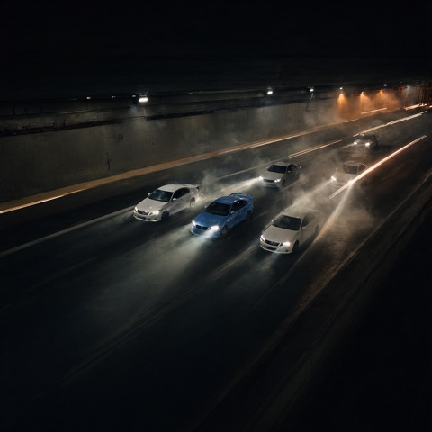
C1 · soldier-vs-monster
1:1 -> 2048x2048seeds 4210 / 4211Epic cinematic film still: a blood-soaked soldier in battered modern combat armor stands alone on a rain-soaked ruined street, defiantly facing a colossal horned demon the size of a cathedral with burning amber eyes and bone-cracked armor plates towering over collapsed skyscrapers, blood and embers swirling in the storm, volumetric god rays, anamorphic lens flare, hyper-detailed dark fantasy blockbuster, wallpaper-grade detail.
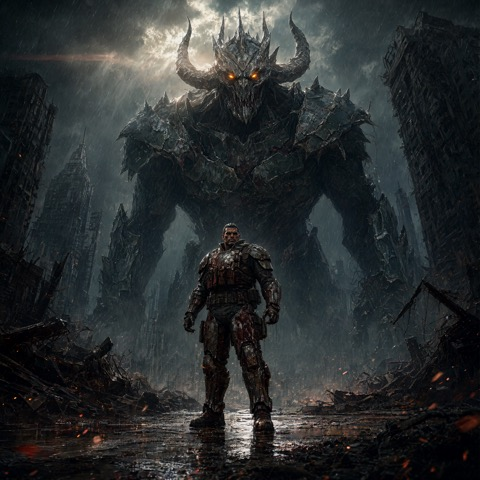
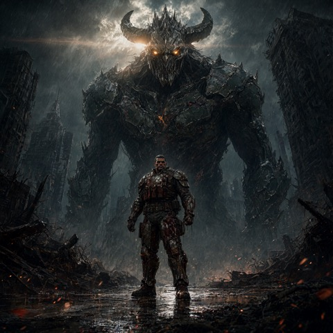
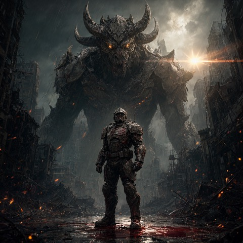
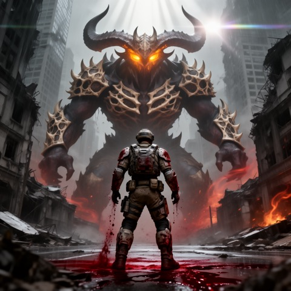
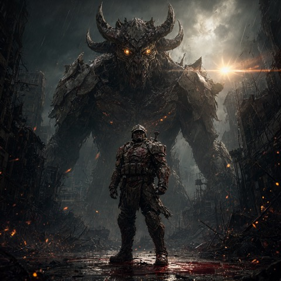
C2 · anime-swordswoman
1:1 -> 2048x2048seeds 4210 / 4211Cinematic anime key visual: a beautiful young swordswoman with long silver hair and a scar across her cheek, blood droplets suspended in the air as she sheathes her glowing katana on a neon skyscraper rooftop at midnight, torn black coat whipping in the wind, neon megacity bokeh below, dynamic low-angle shot, masterpiece anime illustration, wallpaper-grade detail.
Method
- Same 8 prompts and the same two seeds (4210 / 4211) for every cell. The prompt set was frozen via md5 before the first run.
- Each card ran its own build, so builds differ: Qwen bf16 on the 5090 and int8 on the 5060 Ti, FLUX GGUF Q6_K and Q3_K_S; the text encoders differ per card too (Qwen bf16/w4a8, FLUX fp8/fp4_mixed). FLUX does not fit into 16 GB even as Q3, so on the 5060 Ti it streams its weights from NVMe.
- Sampling: Qwen-Image 2.1 with 40 steps (cfg=1, euler) — my choice; the ComfyUI template default would be 25. FLUX.2 [dev] with 20 steps (guidance=4, euler) — the ComfyUI template default. Not the same step count.
- Time per image and VRAM peak come from the generation metadata of each run (16 generations per cell).
- Quality is my own rating, 1-10, all 64 images. One person, subjective, not a metric.
Honest limits
- One run day, one setup per card. Different quantizations, different step counts — this is a real-world test, not a controlled lab study.
- The ratings are one person's taste. The gap is large enough to be visible, the decimals are not precise.
- FLUX.2 [dev] on 16 GB had to stream weights from NVMe storage to run at all (first attempt was a hard out-of-memory). The 12 minutes per image are the price of not fitting.
Credits
Images generated by Qwen-Image 2.1 (Qwen team) and FLUX.2 [dev] (Black Forest Labs), run locally through ComfyUI. All 64 source PNGs came out of one overnight run on my own GPUs.